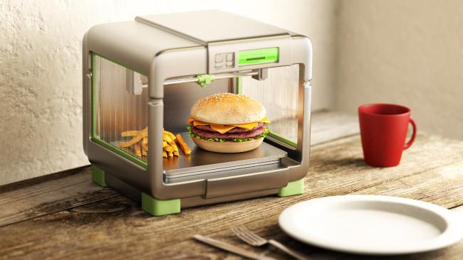
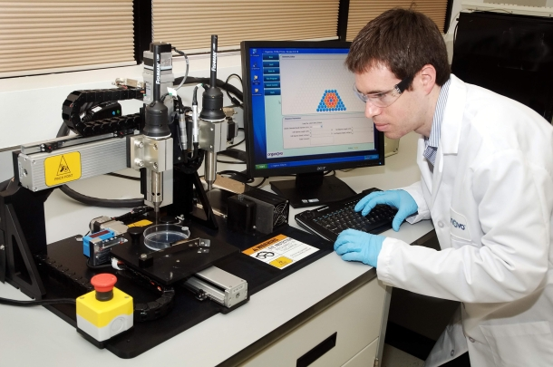
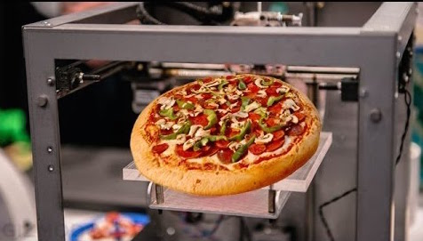
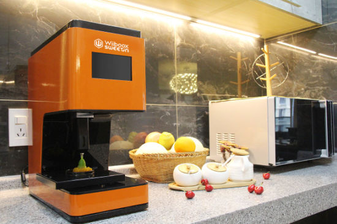
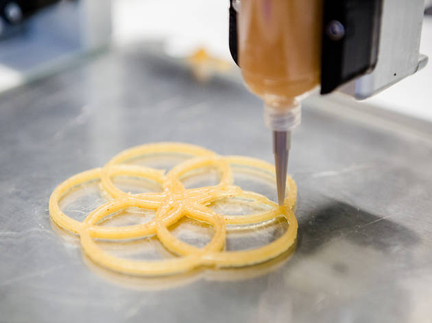
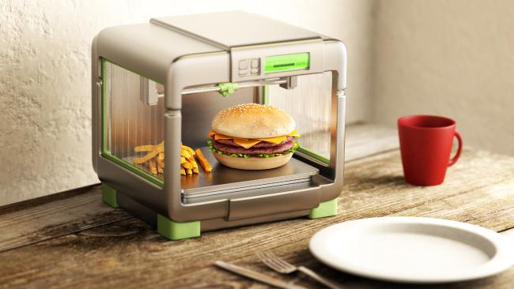
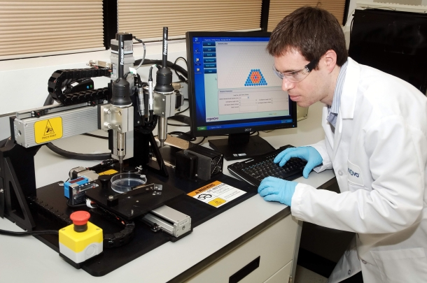
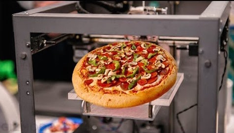
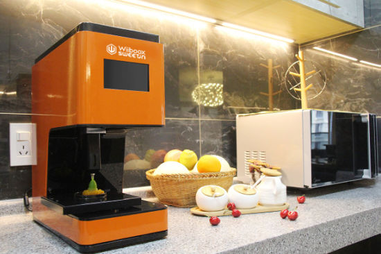
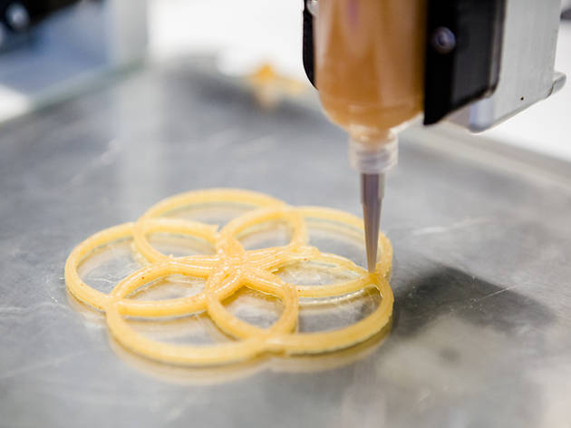

WHO ARE WE?
Ordering groceries online is a new level of convenience. You place your order online and wait for delivery, no driving or waiting in lines. We have taken ordering convenience even further by re-inventing the way things are delivered. Now that we have steped into a world in which 3D printing has advanced far enough to print organic matter, we have the ability to re-think they dynamic of a kitchen. What if every kitchen had a 3D printer instead of a fridge or pantry? What if you could order your groceries online and the items could materialize in-front of you. Instead of scheduled delivery times, there would be scheduled print times. Imagine arriving home from work to find dinner ready and waiting to be cooked.
HOW DO THE PRINTERS WORK?
By sheer magic created by biochemists, our 3D printers are able to print organic matter. Our printers use organic substances that a printer could use to combine and produce various types of food. Similar to how a toner printer can prints combinations of CMKY, except instead of cyan and magenta is would be protein and B12.
HOW MUCH FOOD SHOULD I PRINT?
Glad you asked! Fill in this helpful survey and we can help you choose a portion size that will fill you up without haveing to throw anything away.